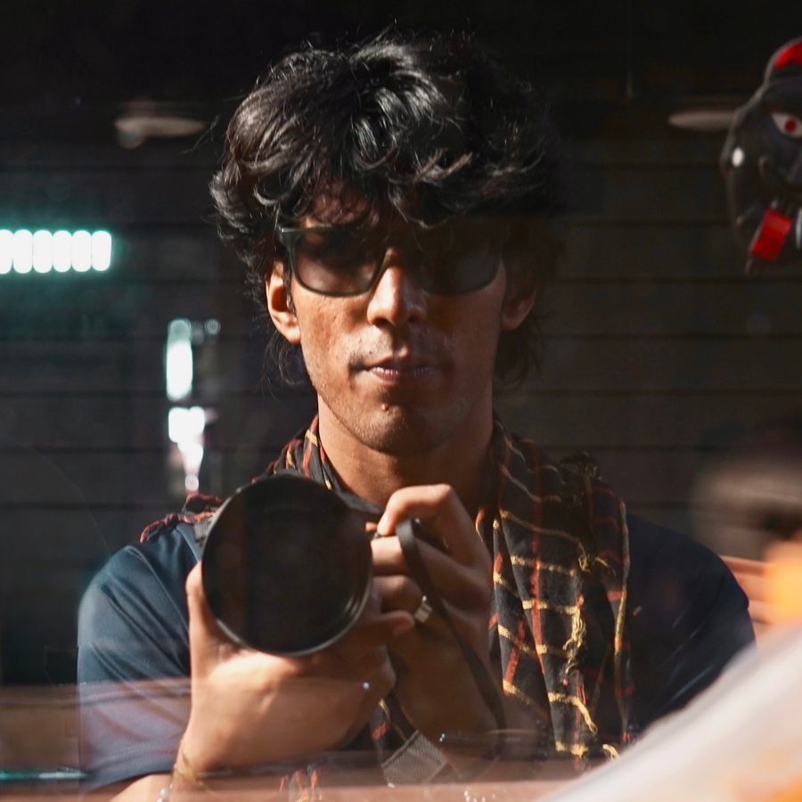

"Tenacious and Fortunate", aptly put.

Harshendra 'Arya' is an independent filmmaker and editor based out of Delhi India. He has a passion for running and trekking. Having done his bachelors in Physics from Hansraj College, DU; he likes to dive into fascinating paths no matter the domain.